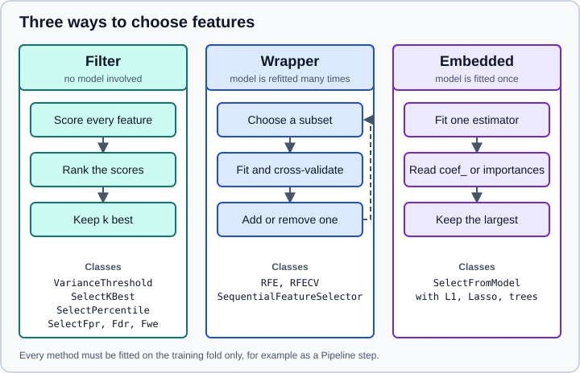

Feature Selection
|
This content was generated with the assistance of AI and should be verified against the official documentation before being relied on in production. |
This page targets NumPy 2.5, pandas 3.1 and scikit-learn 1.9, and it was checked in October 2026. Examples target Python 3.13 or 3.14. Every Python example was run on Python 3.13.18, NumPy 2.5.4, pandas 3.1.0 and scikit-learn 1.9.1. The package is called scikit-learn, it is installed with pip install scikit-learn and it is imported as sklearn.
Feature selection removes columns that add noise, cost or complexity without adding signal. Fewer features can make a model faster, easier to explain and sometimes more accurate, especially when there are many more columns than rows. The sklearn.feature_selection module collects the tools: selectors that score features without a model, selectors that wrap a model, and selectors that read importances from a fitted model. All of them are transformers with fit, transform and get_support, so they slot into a Pipeline.
The page covers each selector with the options that matter and the traps that make selected features look better than they are. The wider topic of building features is on Feature Engineering, the permutation-based way of measuring importance on Permutation Importance & Partial Dependence, and the leakage rules on Common Pitfalls: Leakage & Randomness.

Original drawing following the grouping used in the scikit-learn feature selection guide.
Selection is part of the model
Every selector learns something in fit: a variance, a score, a ranking, a set of coefficients. If that learning uses the whole data set and the model is then cross-validated on the selected columns, the validation folds have already influenced which columns were chosen. The effect is not small. With 5,000 noise columns and random labels, selecting the 20 best columns before cross-validation reports an accuracy far above the honest 0.5, as shown on Feature Engineering. The remedy is always the same: make the selector a step of a Pipeline, so that cross-validation and search refit it on each training fold.
from sklearn.feature_selection import SelectKBest, f_classif
from sklearn.linear_model import LogisticRegression
from sklearn.pipeline import make_pipeline
model = make_pipeline(SelectKBest(f_classif, k=10), LogisticRegression(max_iter=1000))Everything below can be put in that position. The number of kept features (k, n_features_to_select, a threshold) is a hyperparameter and can be tuned with GridSearchCV like any other, using the pipeline step name, for example selectkbest__k.
Common methods on every selector
All selectors share a small API through SelectorMixin.
| Member | Meaning |
|---|---|
|
Boolean mask over the input columns, |
|
The input with the unselected columns removed. |
|
Reinserts zero-filled columns where features were removed, to restore the original width. |
|
Names of the kept columns; with a data frame it uses its column names. Combine with |
|
Fitted attributes like on any estimator. |
from sklearn.datasets import make_classification
from sklearn.feature_selection import SelectKBest, f_classif
import pandas as pd
X, y = make_classification(n_samples=300, n_features=40, n_informative=5,
n_redundant=0, shuffle=False, random_state=0)
X = pd.DataFrame(X, columns=[f"f{i}" for i in range(40)])
selector = SelectKBest(f_classif, k=2).fit(X, y)
print(selector.transform(X).shape, selector.inverse_transform(selector.transform(X)).shape)
selector.set_output(transform="pandas")
print(selector.transform(X).columns.tolist())(300, 2) (300, 40)
['f1', 'f4']Source: scikit-learn: Feature selection.
VarianceThreshold: drop near-constant columns
VarianceThreshold is the simplest filter. It looks only at X, never at the target, and removes columns whose variance is not above threshold. The default 0.0 removes only constant columns. For Boolean columns, the variance of a Bernoulli feature is p(1 - p), so a threshold of 0.8 * (1 - 0.8) drops columns that have the same value in more than 80 percent of the rows.
import pandas as pd
from sklearn.feature_selection import VarianceThreshold
X = pd.DataFrame({"const": [1, 1, 1, 1],
"rare": [0, 0, 0, 1],
"spread": [1, 5, 2, 9],
"flag": [0, 1, 0, 1]})
vt = VarianceThreshold(threshold=0.0).fit(X)
print(vt.variances_)
print(vt.get_support())
print(vt.get_feature_names_out())[0. 0.1875 8. 0.25 ]
[False True True True]
['rare' 'spread' 'flag']Variance depends on scale. A column measured in metres and the same column in millimetres have variances that differ by a factor of a million, so a numeric threshold other than zero only makes sense on features that share a scale (or on binary indicators). VarianceThreshold accepts NaN, which it ignores when computing the variance.
Univariate selection: score each feature alone
Univariate selectors compute one statistic per feature against the target and keep the best. They are fast, they scale to very wide data, and they cannot see interactions: a feature that only matters together with another one scores poorly. Three families of selectors differ in how they use the scores.
| Class | Keeps |
|---|---|
|
The |
|
The top percentage of features. |
|
Features whose p-value is below |
|
Features that pass a Benjamini-Hochberg false discovery rate procedure. |
|
Features that pass a Bonferroni-style family-wise error correction. |
|
One class with |
The three Fpr, Fdr and Fwe classes need a score function that returns p-values. After fit, scores_ and pvalues_ hold the statistic and its p-value for each feature.
Score functions
| Function | Target | What it measures |
|---|---|---|
|
classification |
ANOVA F statistic between the feature and the class labels. Only detects differences in class means, so linear effects. |
|
regression |
F statistic of a univariate linear regression; based on the correlation. |
|
regression |
The Pearson correlation itself, with its sign (no p-values). Useful as a transparent ranking. |
|
classification |
Chi-squared statistic. Requires non-negative features such as counts, frequencies or one-hot columns. |
|
classification, regression |
Mutual information estimated with nearest neighbours. Detects non-linear dependence but is slower and noisy; accepts |
import pandas as pd
from sklearn.datasets import load_breast_cancer
from sklearn.feature_selection import SelectKBest, f_classif, mutual_info_classif
X, y = load_breast_cancer(return_X_y=True, as_frame=True)
by_f = SelectKBest(f_classif, k=5).fit(X, y)
print(list(by_f.get_feature_names_out()))
print(pd.Series(by_f.scores_, X.columns).sort_values(ascending=False).head(3).round(1))
by_mi = SelectKBest(lambda X, y: mutual_info_classif(X, y, random_state=0), k=5).fit(X, y)
print(list(by_mi.get_feature_names_out()))['mean perimeter', 'mean concave points', 'worst radius', 'worst perimeter', 'worst concave points']
worst concave points 964.4
worst perimeter 897.9
mean concave points 861.7
dtype: float64
['mean concave points', 'worst radius', 'worst perimeter', 'worst area', 'worst concave points']Two lessons from this output. First, the choice of score changes the answer: the F test and the mutual information agree on four of the five features but disagree on the fifth. Second, the top features are strongly correlated with each other (radius, perimeter and area measure the same size), so selecting the five best by a univariate score often keeps near-duplicates. A univariate filter does not know that the second one adds nothing once the first is in.
chi2 and negative values
chi2 rejects negative inputs because it treats features as counts. Standardised data have negative values, so scale to a non-negative range with MinMaxScaler first, or use a different score.
from sklearn.datasets import load_breast_cancer
from sklearn.feature_selection import chi2
from sklearn.preprocessing import StandardScaler
X, y = load_breast_cancer(return_X_y=True)
try:
chi2(StandardScaler().fit_transform(X), y)
except ValueError as error:
print(error)Input X must be non-negative.Source: scikit-learn: chi2.
P-value selectors
SelectFpr, SelectFdr and SelectFwe answer a different question from SelectKBest: not "which are the top five" but "which features show evidence of dependence at this error rate". With a strong signal they keep many features; with noise they may keep none.
from sklearn.datasets import load_breast_cancer
from sklearn.feature_selection import (GenericUnivariateSelect, SelectFdr, SelectFpr,
SelectFwe, SelectPercentile, f_classif)
X, y = load_breast_cancer(return_X_y=True, as_frame=True)
print(SelectPercentile(f_classif, percentile=10).fit(X, y).get_support().sum())
for cls in (SelectFpr, SelectFdr, SelectFwe):
print(cls.__name__, cls(f_classif, alpha=0.01).fit(X, y).get_support().sum())
generic = GenericUnivariateSelect(f_classif, mode="k_best", param=3).fit(X, y)
print(generic.get_feature_names_out())3
SelectFpr 25
SelectFdr 25
SelectFwe 25
['mean concave points' 'worst perimeter' 'worst concave points']On this data 25 of 30 features are individually significant, which again shows that a p-value says that a relationship exists, not that the feature is useful on top of the others.
Tuning k inside a pipeline
Because the selector is a pipeline step, the number of features is searched together with the model. The following data have 40 columns of which only the first five carry signal. The selection is refitted on every training fold, so the reported score is honest.
import pandas as pd
from sklearn.datasets import make_classification
from sklearn.feature_selection import SelectKBest, f_classif
from sklearn.linear_model import LogisticRegression
from sklearn.model_selection import GridSearchCV, StratifiedKFold, cross_val_score
from sklearn.pipeline import make_pipeline
from sklearn.preprocessing import StandardScaler
X, y = make_classification(n_samples=300, n_features=40, n_informative=5,
n_redundant=0, shuffle=False, random_state=0)
cv = StratifiedKFold(5, shuffle=True, random_state=0)
plain = make_pipeline(StandardScaler(), LogisticRegression(max_iter=1000))
selected = make_pipeline(StandardScaler(), SelectKBest(f_classif, k=5), LogisticRegression(max_iter=1000))
print("all 40 features:", cross_val_score(plain, X, y, cv=cv).mean().round(3))
print("5 selected :", cross_val_score(selected, X, y, cv=cv).mean().round(3))
search = GridSearchCV(selected, {"selectkbest__k": [2, 5, 10, 20, 40]}, cv=cv).fit(X, y)
print(search.best_params_, search.best_score_.round(3))all 40 features: 0.777
5 selected : 0.85
{'selectkbest__k': 5} 0.85Source: scikit-learn: Pipeline ANOVA SVM.
The score of the best k from the search is slightly optimistic, because the same folds chose it. For a final estimate wrap the whole search in an outer cross-validation (nested cross-validation), described on Grid, Randomized & Halving Search.
Recursive feature elimination: RFE and RFECV
RFE wraps an estimator that exposes feature weights, either coef_ or feature_importances_. It fits the estimator on all features, removes the least important step features, refits on the rest, and repeats until n_features_to_select remain. ranking_ tells the order of elimination: kept features have rank 1.
import pandas as pd
from sklearn.datasets import load_breast_cancer
from sklearn.feature_selection import RFE
from sklearn.linear_model import LogisticRegression
from sklearn.preprocessing import StandardScaler
X, y = load_breast_cancer(return_X_y=True, as_frame=True)
Xs = pd.DataFrame(StandardScaler().fit_transform(X), columns=X.columns)
rfe = RFE(LogisticRegression(max_iter=2000), n_features_to_select=5, step=1).fit(Xs, y)
print(list(rfe.get_feature_names_out()))
print(rfe.n_features_)
print(rfe.ranking_)['radius error', 'worst radius', 'worst texture', 'worst area', 'worst concave points']
5
[12 14 15 8 23 10 13 3 25 20 1 22 9 4 18 6 24 21 17 16 1 1 2 1
7 26 5 1 11 19]Source: scikit-learn: RFE.
The estimator’s weights are only comparable if the features share a scale, so standardise first (inside the pipeline in real use). n_features_to_select accepts an integer or a float fraction; None keeps half of the features. A larger step (an integer, or a float fraction of the remaining features) makes the search faster at the price of a coarser ranking. importance_getter="auto" uses coef_ or feature_importances_; pass an attribute name or a callable for other estimators, and a dotted path such as "named_steps.logisticregression.coef_" when the estimator is a Pipeline.
RFECV adds cross-validation to pick the number of features. It runs RFE on each fold and scores every subset size on the held-out part; the size with the best mean score wins. The learning curve over subset sizes is in cv_results_ (this attribute replaced the old grid_scores_).
import pandas as pd
from sklearn.datasets import make_classification
from sklearn.feature_selection import RFECV
from sklearn.linear_model import LogisticRegression
from sklearn.model_selection import StratifiedKFold
from sklearn.pipeline import make_pipeline
from sklearn.preprocessing import StandardScaler
X, y = make_classification(n_samples=300, n_features=40, n_informative=5,
n_redundant=0, shuffle=False, random_state=0)
X = pd.DataFrame(X, columns=[f"f{i}" for i in range(40)])
estimator = make_pipeline(StandardScaler(), LogisticRegression(max_iter=1000))
rfecv = RFECV(
estimator,
step=1,
cv=StratifiedKFold(5, shuffle=True, random_state=0),
scoring="accuracy",
min_features_to_select=1,
importance_getter="named_steps.logisticregression.coef_",
).fit(X, y)
print(rfecv.n_features_, list(rfecv.get_feature_names_out()))
print(rfecv.cv_results_["mean_test_score"].round(3)[:10])3 ['f0', 'f1', 'f4']
[0.773 0.807 0.837 0.833 0.797 0.797 0.813 0.807 0.8 0.793]Source: scikit-learn: RFECV.
The array holds the mean cross-validated score for 1, 2, 3, … features, and the best (three features) is selected. The curve is often flat near its maximum, and std_test_score gives the spread across folds, so a smaller subset whose mean score is within one standard deviation of the best is often as good and simpler. RFECV also supports n_jobs for parallel folds. Like every selector it must itself be inside an outer cross-validation if you report a score: put it in a Pipeline before the final estimator and call cross_val_score on the pipeline.
RFE removes features one step at a time by looking at a model fitted on all remaining ones, so it can cope with correlated features better than a univariate filter, but it costs a model fit per step and it depends on the quality of the weights.
SelectFromModel: read the importances of one fitted model
SelectFromModel is a meta-transformer. It fits an estimator once and keeps the features whose importance (coef_ or feature_importances_) is above a threshold. Any estimator that exposes those attributes works, which includes linear models with an L1 penalty, Lasso, and the tree ensembles.
| Parameter | Meaning |
|---|---|
|
The model to fit. It must expose |
|
A number, or a string such as |
|
Keep at most this many features, taking the largest importances. Set |
|
The norm used to combine the rows of |
|
|
|
Attribute name, dotted path or callable that returns the importances. |
With an L1 penalty many coefficients become exactly zero, so the selected set is the non-zero one. In scikit-learn 1.8 the penalty argument of LogisticRegression was deprecated: express the L1 penalty with l1_ratio=1 (together with a solver that supports it, "liblinear" or "saga") and set the strength with C, where a smaller C means a stronger penalty. Standardise the features first so the penalty treats them equally.
from sklearn.datasets import load_breast_cancer
from sklearn.feature_selection import SelectFromModel
from sklearn.linear_model import LogisticRegression
from sklearn.pipeline import make_pipeline
from sklearn.preprocessing import StandardScaler
X, y = load_breast_cancer(return_X_y=True, as_frame=True)
l1 = make_pipeline(
StandardScaler(),
SelectFromModel(LogisticRegression(l1_ratio=1, C=0.1, solver="liblinear")),
)
l1.set_output(transform="pandas")
Xt = l1.fit_transform(X, y)
print(Xt.shape)
print(list(Xt.columns))(569, 8)
['mean concave points', 'radius error', 'worst radius', 'worst texture', 'worst smoothness', 'worst concavity', 'worst concave points', 'worst symmetry']For a regression problem the same pattern uses LassoCV, which chooses the penalty strength by cross-validation:
from sklearn.datasets import load_diabetes
from sklearn.feature_selection import SelectFromModel
from sklearn.linear_model import LassoCV
from sklearn.pipeline import make_pipeline
from sklearn.preprocessing import StandardScaler
X, y = load_diabetes(return_X_y=True, as_frame=True)
model = make_pipeline(StandardScaler(), SelectFromModel(LassoCV(cv=5, random_state=0))).fit(X, y)
selector = model[-1]
print(selector.estimator_.alpha_.round(4))
print(X.columns[selector.get_support()].tolist())0.0789
['age', 'sex', 'bmi', 'bp', 's1', 's2', 's4', 's5', 's6']Here only s3 is dropped because its coefficient is exactly zero; the L1 penalty does not guarantee a sparse solution if the best penalty is small.
Tree ensembles provide feature_importances_, the mean decrease in impurity. The same selector works, with the median as threshold or a fixed number of features:
import numpy as np
from sklearn.datasets import load_breast_cancer
from sklearn.ensemble import RandomForestClassifier
from sklearn.feature_selection import SelectFromModel
X, y = load_breast_cancer(return_X_y=True, as_frame=True)
forest = RandomForestClassifier(n_estimators=200, random_state=0)
top4 = SelectFromModel(forest, threshold=-np.inf, max_features=4).fit(X, y)
print(list(top4.get_feature_names_out()))
fitted = RandomForestClassifier(n_estimators=200, random_state=0).fit(X, y)
prefit = SelectFromModel(fitted, prefit=True, threshold=-np.inf, max_features=3)
print(X.columns[prefit.get_support()].tolist())['worst radius', 'worst perimeter', 'worst area', 'worst concave points']
['worst radius', 'worst perimeter', 'worst concave points']Impurity-based importances are computed on the training data and favour features with many distinct values; they are also split among correlated features. The next example shows the second effect and the alternative.
import numpy as np
import pandas as pd
from sklearn.ensemble import RandomForestClassifier
from sklearn.inspection import permutation_importance
from sklearn.model_selection import train_test_split
rng = np.random.default_rng(0)
a = rng.normal(size=600)
X = pd.DataFrame({"a": a, "a_copy": a + 0.01 * rng.normal(size=600), "c": rng.normal(size=600)})
y = (a + 0.5 * X["c"] > 0).astype(int)
forest = RandomForestClassifier(n_estimators=300, random_state=0).fit(X, y)
print(dict(zip(X.columns, forest.feature_importances_.round(3).tolist())))
X_train, X_val, y_train, y_val = train_test_split(X, y, random_state=0)
held_out = RandomForestClassifier(n_estimators=300, random_state=0).fit(X_train, y_train)
result = permutation_importance(held_out, X_val, y_val, n_repeats=20, random_state=0)
print(dict(zip(X.columns, result.importances_mean.round(3).tolist()))){'a': 0.375, 'a_copy': 0.385, 'c': 0.24}
{'a': 0.214, 'a_copy': 0.199, 'c': 0.183}The two copies of the same signal share the credit, so each looks less important than it is, and a threshold can drop either or both. Permutation importance on held-out data is a better guide for deciding which features to keep, at the cost of extra predictions. SelectFromModel accepts a callable importance_getter, so you can wrap permutation importance in a small function if you want to use it as the criterion.
SequentialFeatureSelector: greedy forward or backward search
SequentialFeatureSelector (SFS) needs no coef_ or feature_importances_; it works with any estimator because it measures the cross-validated score of candidate subsets. Forward selection starts with no features and adds the one that improves the score most; backward selection starts with all and removes the one whose removal hurts least.
from sklearn.datasets import load_breast_cancer
from sklearn.feature_selection import SequentialFeatureSelector
from sklearn.linear_model import LogisticRegression
from sklearn.pipeline import make_pipeline
from sklearn.preprocessing import StandardScaler
X, y = load_breast_cancer(return_X_y=True, as_frame=True)
estimator = make_pipeline(StandardScaler(), LogisticRegression(max_iter=2000))
for direction in ("forward", "backward"):
sfs = SequentialFeatureSelector(estimator, n_features_to_select=3, direction=direction,
cv=5, scoring="accuracy").fit(X, y)
print(direction, list(sfs.get_feature_names_out()))
auto = SequentialFeatureSelector(estimator, n_features_to_select="auto", tol=0.001, cv=5).fit(X, y)
print(auto.n_features_to_select_, list(auto.get_feature_names_out()))forward ['worst texture', 'worst perimeter', 'worst smoothness']
backward ['mean texture', 'worst area', 'worst smoothness']
4 ['mean symmetry', 'worst texture', 'worst perimeter', 'worst smoothness']Key points:
-
n_features_to_selectis an integer, a fraction, or"auto"(the default). With"auto"and a numerictol, the search stops when the score improves by less thantol; withtol=Noneit keeps half of the features. -
Cost: forward selection of
kfeatures out ofnfits aboutk * nmodels timescvfolds, and backward selection fits about(n - k) * n. Choose the direction that starts nearer the final size. -
The search is greedy. It never reconsiders a choice, so it can miss the best subset, and forward and backward may disagree.
-
The score used is cross-validated on the data you give it. When wrapped in an outer cross-validation, the inner
cvis a nested one. -
n_jobsparallelises the candidate evaluations.
Unlike RFE and SelectFromModel, SFS has no dependence on the estimator exposing weights, so it also works with KNeighborsClassifier, SVC with an RBF kernel and others.
Selection and missing values, scaling and the rest of the pipeline
Order matters in a pipeline. A sensible default order is: impute missing values, scale, select, fit the model. VarianceThreshold and the tree-based selectors accept NaN, but SelectKBest with f_classif, RFE with a linear model and most others do not, so impute first (see Imputing Missing Values). Univariate scores on categorical columns need an encoding step first; for one-hot columns chi2 is natural because the values are non-negative.
After a ColumnTransformer the column names are prefixed, for example num__age, so get_feature_names_out() on the selector gives the prefixed names. See ColumnTransformer & Heterogeneous Data.
Choosing a method
| Situation | Prefer | Why |
|---|---|---|
Remove constant or near-constant columns |
|
No target needed, nearly free; do it first. |
Very wide data (thousands of columns), quick screen |
|
Fast, one score per feature, usable as a first stage before a model-based selector. |
Report which features show evidence of dependence |
|
Controls the false discovery rate across many tests. |
Linear model, want a sparse model |
|
The selection is part of fitting a model you trust. |
Tree ensemble, want fewer columns for speed |
|
Captures interactions; check the stability of the ranking. |
Small data, need the best subset for a given model |
|
Uses real cross-validated scores; costs many fits. |
Want fewer features but combined, not chosen |
|
That is feature extraction, not selection; see PCA, TruncatedSVD & NMF. |
Pitfalls
-
Selecting on all the data before cross-validation. The most common source of inflated scores. Use a
Pipeline. -
Selecting on the test set to "see which features matter" and then retraining. The test set is no longer independent.
-
Univariate scores on unscaled or non-linear data.
f_classifsees only linear mean differences; usemutual_info_classifor a model-based selector for non-linear effects. -
Correlated features. Univariate filters keep all of them; impurity importances split the credit. Cluster correlated features or use permutation importance.
-
Trusting a ranking from a small sample. Rankings change with the random seed and the folds. Repeat the selection on several resamples and keep the features that are chosen often.
-
Unscaled inputs to L1 or RFE with linear models. Weights are not comparable across features of different scale.
-
Reporting
RFECVorGridSearchCVbest scores as test performance. Evaluate on data that played no part in the choice. -
Feature names lost with NumPy arrays. Use data frames and
get_feature_names_out, orget_supportwith the original names.
Where older books and tutorials are outdated
| Older statement | Current practice (scikit-learn 1.9) |
|---|---|
|
|
|
The module is |
|
Use |
|
|
|
Still available; |
|
Replaced by |
Selection with positional lists only, because inputs were NumPy arrays. |
Data frames keep names through |
Pass positional arguments such as |
Arguments after the score function are keyword-only since 1.0; write |